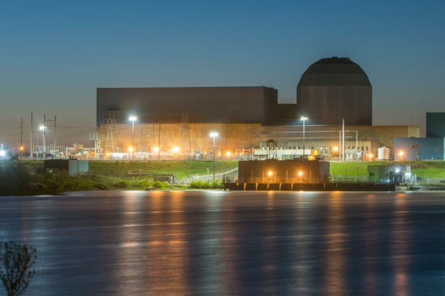

Meta se lanza a por la energía nuclear para sus centros de datos de IA: acaba de sellar un ambicioso acuerdo a 20 años
Meta, el gigante detrás de Facebook e Instagram, sabe que la inteligencia artificial (IA) no se alimenta solo de modelos de lenguaje. También necesita energía, mucha y estable. Por eso ha sellado un acuerdo de 20 años con Constellation Energy para suministrar electricidad nuclear a parte de sus centros de datos en Estados Unidos. No parece un gesto simbólico ni una apuesta verde para la galería: es una jugada calculada para blindar su infraestructura y mantener el pulso del desarrollo de la IA en un mundo cada vez más competitivo.
El movimiento no es menor. La tecnológica ha alcanzado un acuerdo para que la planta nuclear Clinton Clean Energy Center, ubicada en Illinois, alimente sus centros de datos de la región a partir de 2027. Se trata de un reactor que estaba previsto que cerrara en 2017 tras años de pérdidas financieras, pero que pudo seguir funcionando pese a los desafíos. Según la firma con sede en Menlo Park, el acuerdo permitirá mantener en funcionamiento las instalaciones, preservando más de 1.100 empleos.
La nuclear entra en escena como solución energética para Meta
La inversión de la compañía también ayudará a realizar las mejoras necesarias para aumentar la producción energética en 30 megavatios, alcanzando una capacidad total de 1.121 megavatios. No está claro qué porcentaje de la energía eléctrica producida utilizará el gigante tecnológico para impulsar su infraestructura de IA, pero sí se sabe que la producción actual alcanza a unos 800.000 hogares estadounidenses.
Mientras la demanda energética de los centros de datos crece de forma exponencial, la industria tecnológica busca soluciones que no comprometan ni la estabilidad del suministro ni sus compromisos medioambientales. En ese contexto, la energía nuclear ha reaparecido como una alternativa viable: no emite dióxido de carbono durante la generación y ofrece una producción constante, al contrario que las fuentes renovables como la solar o la eólica, que dependen de condiciones climáticas variables.
Goldman Sachs ya había anticipado este giro. En un informe reciente, el banco de inversión advirtió que, si el ritmo de adopción de la IA se mantiene, la demanda energética ligada a esta tecnología podría multiplicarse por 160 de aquí a 2030. Para mantener ese crecimiento, será necesario construir entre 85 y 90 gigavatios de nueva capacidad nuclear en Estados Unidos. Y ahí es donde la energía nuclear entra en juego como solución de alto rendimiento y baja huella de carbono.
Esta apuesta de Meta no es aislada. Google ha avanzado en la misma dirección con acuerdos como el que mantiene con Kairos Power, una compañía que desarrolla reactores modulares (SMR) de hasta 500 megavatios. Amazon también ha dado el paso y ha firmado varios acuerdos para impulsar la construcción de estos reactores pequeños y avanzados, incluyendo proyectos con Energy Northwest, Dominion Energy y la startup X-energy, que trabaja en reactores rápidos de nueva generación.
La energía nuclear no está libre de desafíos. Su infraestructura sigue siendo costosa y las preocupaciones en torno a la seguridad y la gestión de residuos siguen presentes, especialmente por el legado de tecnologías anteriores. Pero las nuevas generaciones de reactores, como los SMR, prometen abordar muchos de estos obstáculos: con diseños más seguros, tiempos de despliegue más cortos y costes potencialmente más contenidos.
Para empresas como Meta, lo prioritario parece ser garantizar un suministro energético a largo plazo, sin sobresaltos y con la menor huella de carbono posible. El acuerdo con Constellation Energy refleja esa realidad, pero queda por ver si estos planes se materializan como está previsto. No sería la primera vez que un proyecto de este tipo se complica: en 2022, uno de sus intentos anteriores en Idaho quedó en pausa tras detectarse la presencia de una rara especie de abeja en el terreno destinado a la infraestructura.
Noticias Relacionadas

Europa y España están sufriendo una ola de ciberataques. Así que Microsoft ha decidido tomar cartas en el asunto
Microsoft quiere ‘blindar’ a Europa frente a ciberataques con IA El nuevo programa es gratuito y se adapta a cada país España ya es uno de los grandes objetivos de los cibercriminales.
Leer más
El dominio de China de las tierras raras no tiene nada que ver con la geografía: nace de 39 programas universitarios
China produce el 70% de las tierras raras y controla el 90% de la industria del procesado de estos elementos químicos El país liderado por Xi Jinping tiene 39 programas universitarios de química especializados en las tierras raras.
Leer más